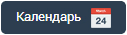

Формы.
Старинная статья про формы (18/12/2012).
Формы нужны для того, чтобы отправлять данные с веб-страницы на веб-сервер, который сможет эти данные обработать: зарегистрировать пользователя, создать сообщение на форуме, отправить письмо и так далее.
Чтобы создать форму, нужно использовать тег <form></form>, внутри которого размещаются поля формы.
У тега <form></form> есть два важных атрибута:
- action — задаёт URL-адрес отправки формы.
- method — задаёт метод отправки формы.
<form action="https://echo.htmlacademy.ru/courses" method="get">
<!-- Поля формы -->
</form>Если атрибут action не указан, данные отправятся на ту же страницу, откуда была отправлена форма.
После отправки данных страница будет перезагружена.
Метод отправки формы.
Для отправки формы обычно используют методы get или post. Если не указать атрибут method, то будет использован get.
get.
Метод get посылает данные формы в строке запроса, то есть они видны в адресной строке браузера в виде пар «имя=значение», следующих после знака вопроса (?) и разделяющихся между собой амперсандом (&).
Этот метод может отправлять до 4 Кб данных.
Метод get лучше использовать в поисковых формах, потому что он позволяет получить ссылку на результаты поиска и сохранить её в закладках или передать кому-то.
post.
Метод post посылает данные в теле HTTP-запроса и используется, когда нужно отправить много данных, и ссылка на результат обработки этих данных не нужна. Например, при редактировании личного профиля или пересылке файлов.
Способ кодирования данных формы.
Атрибут enctype определяет способ кодирования данных формы при их отправке на сервер.
Значения:
- application/x-www-form-urlencoded — (по умолчанию) вместо пробелов ставится +, символы вроде русских букв кодируются их шестнадцатеричными значениями.
- multiform/form-data — данные не кодируются. Это значение применяется при отправке файлов.
- text/plain — пробелы замещаются знаком +, буквы и другие символ не кодируются.
Обычно устанавливать значение атрибута enctype не требуется, данные вполне правильно принимаются на стороне сервера. Однако если используется поле для отправки файла, следует определить атрибут со значением multipart/form-data.
Поля формы.
Тег input.
Большинство полей форм создаётся с помощью тега <input>. У этого тега есть два обязательных атрибута:
- type — тип поля.
- name — имя поля.
Тип поля влияет на то, как оно будет отображаться и вести себя.
Имя поля нужно, чтобы правильно обработать данные на сервере. Обычно, имя поля должно быть уникальным в пределах формы, хотя есть исключения.
Атрибут value задаёт значение поля ввода по умолчанию.
Если введённые пользователем данные должны быть отправлены на сервер, где их обрабатывает серверная программа, то элемент <input> обязательно помещать внутрь контейнера <form></form>.
Помимо CSS, ширина полей ввода может быть задана в значении атрибута size. width: auto для полей ввода рассчитывается из значения size и не растягивает поля на всю ширину контейнера.
Текстовое поле.
Самый распространённый тип <input> — это text, который обозначает текстовое поле. Используется по умолчанию.
<input type="text" name="name">Поле для ввода пароля.
Чтобы создать поле для ввода пароля, в котором текст будет отображаться «звёздочками» или «кружочками», нужно задать атрибуту type значение password.
<input type="password" name="password">Поле ввода числового значения.
Для ввода числовых значений существует специальный тип поля ввода — number. Рядом с полем браузер автоматически подставляет две стрелочки для увеличения и уменьшения числового значения.
При помощи вспомогательных атрибутов min и max можно установить верхнюю и нижнюю границу допустимых значений, а атрибут step устанавливает величину шага изменения значения.
<input type="number" name="amount" min="5" max="50" step="5">В мобильных браузерах при фокусе на такое поле появляется клавиатура, позволяющая вводить соответствующие символы.
Выбор из диапазона.
Поле с типом range выглядит как шкала с ползунком и позволяет выбрать число из некоторого интервала значений.
Атрибуты min и max устанавливают нижнюю и верхнюю границу допустимых значений, а атрибут step устанавливает величину шага изменения значения.
<input type="range" name="dayscount" min="1" max="14" step="1">Поле ввода телефона.
Для ввода телефонных номеров предназначены поля с типом tel.
<input type="tel" name="tel" pattern="[0-9]{1}-[0-9]{3}-[0-9]{3}">В мобильных браузерах при фокусе на такое поле появляется клавиатура, позволяющая вводить только цифры и символы телефонных номеров.
Поля ввода адресов сайтов и email.
Поля email и url, предназначены для ввода электронной почты и адреса сайта. Особенностью этих полей является то, что они автоматически проверяют формат введённых данных.
<input type="email" name="email">
<input type="url" name="url">Внешне эти поля не отличаются от обычных текстовых полей, но обладают важной особенностью, которая очень полезна на мобильных устройствах. Когда вы начинаете заполнять такое поле на мобильнике, там автоматически переключается раскладка клавиатуры. Например, для email отобразятся латинские символы, цифры, знак @ и некоторые другие.
Чекбокс.
Чекбокс — это тег <input> с типом checkbox.
Чекбокс работает по принципу «либо да, либо нет». Если чекбокс включен, то браузер посылает переменную c именем поля на сервер, а если выключен, то не посылается ничего. Таким образом, атрибут value не является обязательным.
В атрибуте value можно задать значение, которое будет передаваться при отправке данных, если чекбокс включен. По умолчанию значением каждого включенного флажка будет on.
Чтобы сделать чекбокс включённым по умолчанию, нужно добавить к тегу атрибут checked.
<input type="checkbox" name="subscribe" checked>Чекбокс не подразумевает выбор одного элемента из нескольких. Поэтому если в одной форме есть несколько чекбоксов, то имена у них должны быть разными.
Если чекбоксы имеют одинаковое имя, то данные придут в виде массива значений.
Радиокнопка.
Радиокнопка — это тег <input> с типом radio.
Обычно радиокнопки размещают группами по несколько штук. Причём у радиокнопок из одной группы должно быть одинаковое имя и разные значения, которые задаются с помощью атрибута value.
Таким образом, атрибут value является для радиокнопок обязательным. Браузер отправляет на сервер значение value выбранной радиокнопки.
<form action="https://echo.htmlacademy.ru/courses" method="post">
<p>Как зовут кота-программиста?</p>
<label>
<input type="radio" name="question-1" value="Кекс"> Кекс
</label>
<label>
<input type="radio" name="question-1" value="Хекс"> Хекс
</label>
<input type="submit" value="Отправить">
</form>Подобным образом можно создавать группы радиокнопок с любым количеством вариантов.
Чтобы сделать какой-либо вариант в группе выбранным по умолчанию, нужно добавить к соответствующему тегу <input> атрибут checked, как у чекбокса.
Поля для ввода даты и времени.
Для выбора даты из календаря существует новый тип поля ввода — date. При клике на данное поле всплывает календарь.
<input type="date" name="date">Тип поля ввода time предназначен для выбора времени. Обычно браузеры отображают его в виде электронных часов.
<input type="time" name="time">Другие поля для ввода даты.
- datetime-local — выбор даты с указанием времени (без учёта временной зоны).
- week — выбор порядкового номера недели в году и года.
- month — выбор месяца и года.
Если браузер не поддерживает эти поля, то вместо них отображаются обычные текстовые поля.
Поле выбора цвета.
Поле с типом color, предназначено для выбора цвета. При клике на такое поле появляется окно с возможностью выбрать цвет из палитры.
Пример:
<input type="color" name="color">Если браузер не поддерживает поле для выбора цвета, то вместо него отображается обычное текстовое поле.
Поле для загрузки файлов.
Поле для загрузки файлов — это тег <input> с типом file. Для этого поля обязательным атрибутом является имя.
Чтобы поле заработало и браузер смог передать выбранный файл на сервер, необходимо добавить форме атрибут enctype со значением multipart/form-data.
Этот атрибут указывает браузеру, в каком виде пересылать данные. Если вы хотите отправить на сервер файл, данные из формы эффективнее всего передавать по частям. За это и отвечает значение multipart/form-data.
Пример:
<form action="https://echo.htmlacademy.ru/courses" method="post" enctype="multipart/form-data">
<p>Выберите изображение для своего аватара:</p>
<input type="file" name="avatar">
<input type="submit" value="Загрузить">
</form>Внешний вид полей с типом file очень сильно отличается в зависимости от операционной системы и очень плохо изменяется с помощью стилей.
Поле поиска.
Поле поиска это тег <input> с типом search.
<input type="search" name="query">Это поле почти не отличается от обычного текстового поля. В некоторых браузерах внутри него появляется крестик для сброса введённого значения.
Скрытое поле.
Скрытое поле — это тег <input> с типом hidden.
Скрытое поле — невидимое, но очень полезное. Его используют, когда в форме нужно отправить какие-то дополнительные служебные данные, которые не вводятся пользователем. Например, это могут быть реквизиты заказа или номер пользователя в форме оплаты.
<input type="hidden" name="account_number" value="15">Тег textarea, многострочное поле ввода.
Многострочное текстовое поле создаётся с помощью парного тега <textarea></textarea>. У него есть атрибуты name и id, которые аналогичны атрибутам тега <input>.
Атрибут rows принимает целочисленное значение и задаёт высоту многострочного поля в строках. Атрибут cols задаёт ширину поля в символах. В качестве ширины символа берётся некоторая «усреднённая ширина».
Атрибут value у многострочного поля отсутствует, а значение по умолчанию задаётся по-другому. Текст, расположенный между открывающим и закрывающим тегом <textarea></textarea> и является значением по умолчанию.
<textarea name="comment" rows="10">Текст комментария</textarea>Тег select, раскрывающийся список.
Раскрывающийся список так же, как и радиокнопки, позволяет выбрать один вариант ответа из нескольких.
Раскрывающийся список создаётся с помощью тега <select></select>.
Варианты ответов задаются с помощью тегов <option></option>, которые должны располагаться внутри тега <select></select>. Например:
<select name="theme">
<option value="light">Светлая тема</option>
<option value="dark">Тёмная тема</option>
...
</select>В атрибуте value тега <option></option>, задаётся значение варианта ответа, а внутри этого тега располагается подпись варианта ответа.
Если при отправке формы у выбранного варианта задан value, то на сервер отправится значение этого атрибута. В противном случае будет отправлен текст подписи.
Первый пункт списка часто используется вместо заголовка выпадающего списка. В таком случае для него используют атрибут disabled, чтобы заблокировать его для выбора.
Мультиселект.
Раскрывающийся список можно превратить в так называемый «мультиселект», то есть список, в котором можно выбрать не один, а несколько вариантов.
Чтобы сделать это, нужно добавить тегу <select></select> атрибут multiple.
Выбрать несколько вариантов можно, щёлкая по ним с зажатой клавишей Ctrl на Windows или Command на MacOS.
Высоту мультиселекта можно изменять с помощью атрибута size тега <select></select>.
Чтобы отметить как выбранные по умолчанию одно или несколько значений, нужно к соответствующим тегам <option></option> добавить атрибут selected.
Пример:
<select name="seasons" size="4" multiple>
<option value="spring">Весна</option>
<option value="summer">Лето</option>
<option value="autumn">Осень</option>
<option value="winter" selected>Зима</option>
</select>При отправке данных мультиселекта на сервер с PHP после имени в значении атрибута name ставятся символы квадратных скобок []. Например, <select name="days[]"></select>. Это необязательное требование для имени мультиселекта, а нужно только для корректной обработки данных в PHP.
Группировка элементов списка.
Так как список может быть довольно большим, в теге <select></select> имеется возможность объединять <option></option> в группы. Обычно это используется для большей наглядности и удобства поиска нужного варианта.
Для формирования группы используется тег <optgroup></optgroup>. Атрибут label этого тега определяет заголовок группы.
Пример:
<select name="variants">
<optgroup label="Группа вариантов 1">
<option value="1">Вариант 1</option>
<option value="2">Вариант 2</option>
<option value="3">Вариант 3</option>
</optgroup>
<optgroup label="Группа вариантов 2">
<option value="4">Вариант 4</option>
<option value="5">Вариант 5</option>
<option value="6">Вариант 6</option>
</optgroup>
</select>Вложенность групп не ограничена, внутрь каждой группы можно вложить другие группы.
Аналогично можно группировать элементы и в списках со множественным выбором.
Настройка полей формы.
Паттерны значений полей.
Чтобы добавить автоматическую проверку формата данных в поле, используется атрибут pattern, в котором с помощью регулярного выражения описывается требуемый формат.
Пример:
<input type="text" name="passport" pattern="[0-9]{3}-[0-9]{5}">Примеры допустимых значений: 000-00000, 123-45678, 932-46432.
При попытке отправить форму с неправильно введёнными данными в поле, браузер выведет всплывающее предупреждение.
Подсказка при заполнении полей.
У полей, в которые вводятся текстовые значения (<textarea></textarea>, разные типы <input>) есть возможность вывести подсказку. Для этого используется атрибут placeholder:
<input type="text" name="login" placeholder="Текст подсказки">Текст подсказки выводится внутри текстового поля, а при вводе значения автоматически убирается.
placeholder может подсказывать в каком именно формате следует ввести номер:
<input type="tel" name="tel" pattern="[0-9]{1}-[0-9]{3}-[0-9]{3}" placeholder="Формат номера: X-XXX-XXX">Управлять внешнем видом подсказки можно с помощью псевдоэлемента ::placeholder.
Список возможных значений.
Для текстовых полей можно заранее определить список возможных значений, которые отображаются, когда вы начинаете вводить текст в поле. Для этого существует специальный тег <datalist></datalist>.
Пример:
<input type="text" name="browser" list="browsers">
<!-- Список возможных значений -->
<datalist id="browsers">
<option value="Firefox"></option>
<option value="Chrome"></option>
<option value="Safari"></option>
</datalist>Связывание текстового поля и списка осуществляется при помощи атрибута list у тега <input> — значение list должно быть таким же, как значение атрибута id у списка.
Если тег <input> имеет специфический тип, например email или другие, то в списке отображаются только корректные для данного типа значения.
Обязательные поля.
Чтобы указать, что поле обязательно для заполнения, нужно добавить ему пустой атрибут required:
<input type="text" name="login" required>При попытке отправить форму с незаполненными обязательными полями браузер выведет всплывающее предупреждение.
Эта проверка работает на клиентской части и упрощает валидацию форм. Но всегда нужно проверять отправленные данные и на стороне сервера.
Запрет редактирования полей.
Иногда возникают ситуации, когда какие-то поля требуется сделать недоступными для редактирования.
Есть два способа: использование атрибута readonly и использование атрибута disabled.
Атрибут readonly не даёт пользователю изменять поле (вводить новый текст, модифицировать существующий). Введённое значение можно выделить и скопировать. Данные из этого поля отправляются на сервер.
Атрибут disabled не даёт пользователю изменять поле (вводить новый текст, модифицировать существующий). Нельзя поставить фокус в это поле, введённое значение нельзя выделять и копировать. Данные из этого поля не отправляются на сервер.
Группировка полей формы.
Когда формы становятся очень большими, возникает потребность зрительно отделить одни поля от других. Для группировки полей используется тег <fieldset></fieldset>.
Пример:
<fieldset>
<input type="text">
<input type="text">
<input type="text">
</fieldset>
<fieldset>
<textarea></textarea>
</fieldset>По умолчанию браузеры отображают результат в виде рамки вокруг этой группы полей, но при помощи CSS можно изменить его внешний вид.
Для каждой группы можно добавить заголовок, поместив тег <legend></legend> внутрь тега <fieldset></fieldset>:
<fieldset>
<legend>Заголовок группы</legend>
<input type="text">
</fieldset>Подписи для полей ввода.
Для повышения удобства работы с формой создают подписи. При нажатии на такие подписи активируется связанное поле.
Создание подписи. Способ № 1.
Первый способ создать подпись — просто обернуть текст подписи и тег поля в тег <label></label>, вот так:
<label>
Подпись <input type="text" name="login">
</label>Тег <label></label> связывает текст и поле ввода логически. А ещё если нажать на текст в такой подписи, то курсор переместится в соответствующее поле.
Надо отметить, что при оборачивании текста в этот тег он визуально никак не меняется, ведь главная задача подписи — создать логическую связь.
Способ № 2. Связь по id.
Иногда обернуть поле и текст подписи в тег <label></label> нельзя. Например, когда они размещены в разных ячейках таблицы.
В этом случае можно связать подпись с полем с помощью атрибута id. Алгоритм такой:
- Добавляем к полю ввода идентификатор с помощью атрибута id.
- Оборачиваем текст подписи в тег <label></label>.
- Добавляем тегу <label></label> атрибут for.
- В атрибут for записываем такое же значение, что и в атрибуте id у поля.
Например:
<label for="login-field">Имя пользователя</label>
...
<input id="login-field" type="text" name="login">Идентификатор, в отличие от имени поля, не передаётся на сервер. Лучше использовать идентификаторы, отличающиеся от имени поля, это особенно актуально для полей множественного выбора.
Также идентификаторы используют в JavaScript для работы с полями.
Автофокус.
При загрузке страницы можно сообщить браузеру в какое поле установить курсор по умолчанию. Для этого используется пустой атрибут autofocus.
Пример:
<input type="search" name="search" autofocus>Автофокус улучшает процесс работы с формами, ведь пользователь избавляется от лишних щелчков мышки там, где они не нужны, и может сразу начинать вводить текст в поле.
Этот атрибут может быть только у одного поля на странице.
Переключение между полями.
При нажатии клавиши Tab браузер передаёт управление (фокус) от одного элемента к другому в том порядке, в котором они были объявлены на странице. Этим порядком можно управлять при помощи атрибута tabindex.
Пример:
<input type="text" tabindex="3">В качестве значения может использоваться любое целое число. Значения выстраиваются последовательно, и переход между элементами происходит от меньшего значения к большему.
Если представлено отрицательное значение — элемент может быть выделен, однако не участвует в последовательной навигации.
Если представлен 0 — элемент может быть выделен и достигнут с помощью последовательной навигации, однако порядок навигации определён платформой.
Из соображений доступности не рекомендуется менять порядок навигации по полям ввода по умолчанию.
Управление автозаполнением полей.
Браузер может запоминать значения, вводимые в текстовые поля. При вводе первых букв текста выводится список сохранённых ранее значений, из которого можно выбрать подходящее. Параметрами автозаполнения можно управлять, используя атрибут autocomplete.
Он может принимать два значения: on и off. Первое включает автозаполнение, второе — отключает. Отключение автозаполнения обычно используется из соображений безопасности, например, чтобы не сохранялись пароли, номера банковских карт и так далее.
Пример:
<input type="text" name="passport" autocomplete="off">Значение по умолчанию зависит от настроек браузера.
Технология localStorage.
Суть localStorage или «локального хранилища» заключается в том, что в него можно записывать данные, которые будут сохраняться в браузере. Эти данные не исчезнут, даже если вы закроете браузер и откроете его снова или уйдёте со страницы и потом вернётесь на неё.
Получается, что можно сохранять данные из формы в хранилище при работе с формой, а при загрузке страницы проверять хранилище на наличие данных, и если они есть, то подставлять в форму. Таким образом, можно предотвратить потерю данных при работе с формами.
<script>
if (window.localStorage) {
let elements = document.querySelectorAll("[name]");
for (let i = 0, length = elements.length; i < length; i++) {
(function(element) {
let name = element.getAttribute("name");
element.value = localStorage.getItem(name) || element.value;
element.onkeyup = function() {
localStorage.setItem(name, element.value);
};
})(elements[i]);
}
}
</script>Тег output, область для вывода результата.
Тег <output></output> представляет собой область, куда выводятся какие-либо результаты вычислений, обычно полученные при помощи JavaScript.
Можно задать значение по умолчанию.
Пример:
<output name="sum">значение по умолчанию</output>В область <output></output> можно выводить значения каких-либо полей формы, добавив обработчик oninput как атрибут формы:
<form action="https://echo.htmlacademy.ru/courses" method="post" oninput="daysoutput.value=dayscount.value">
<input type="range" name="dayscount" min="1" max="14" step="1">
<output name="daysoutput"></output>
</form>Кнопки.
Устаревшие способы создания кнопок.
Кнопка отправки формы.
Кнопка для отправки формы создаётся с помощью тега <input> с типом submit.
Надпись на кнопке можно задать с помощью атрибута value. Для кнопки отправки формы задавать имя не обязательно. Но если имя задано, то на сервер будут отправляться имя и значение кнопки.
Обычно имя для кнопки отправки задают, когда в форме несколько кнопок, отвечающих за разные действия. Браузер отправляет на сервер имя и значение только той из них, на которую нажал пользователь. Таким образом, сервер может понять, какую кнопку нажали и что нужно сделать.
Пример:
<input type="submit" value="Войти">Кнопка-изображение.
В качестве кнопки отправки формы можно использовать изображение. Для этого у тега <input> нужно указать тип image.
Аналогично обычным изображениям на сайте у кнопки-изображения есть ещё два атрибута:
- src — адрес изображения.
- alt — альтернативный текст, отображаемый в том случае, если изображение не загружено.
Пример:
<input type="image" src="enter.png" alt="Войти">Кнопка-изображение работает аналогично кнопке submit, но на сервер дополнительно передаются координаты точки, по которой был произведён клик.
Сброс введённых значений.
В HTML-формах есть специальная кнопка, которая сбрасывает введённые значения и возвращает те, которые были установлены в полях формы по умолчанию. Это поле ввода с типом reset:
<input type="reset" value="Сбросить">Простая кнопка.
Помимо кнопок отправки формы или сброса введённых значений, существуют и «просто кнопки». При нажатии на такую кнопку никаких действий не происходит, а все необходимые действия обычно задаются при помощи JavaScript.
Пример:
<input type="button" value="Кнопка">Современный вариант задания кнопок.
Помимо тега <input> для добавления кнопок можно использовать тег <button></button>. Он расширяет возможности создания кнопок.
Внутри тега <button></button> можно размещать любые HTML-элементы, в том числе изображения. Например:
<button>Календарь <img src="calendar.png" alt=""&lgt;</button>В данном случае кнопка будет выглядеть примерно вот так:

Если в атрибуте type тега <button></button> указать значение submit или reset, то кнопка внутри формы будет отправлять данные на сервер или сбрасывать введённые значения.
По умолчанию значение атрибута type — submit.
А вот type="button" избавит кнопку от всей изначальной функциональности. То есть кнопка будет выглядеть как кнопка, но ничего по умолчанию не делать. Это удобно, если вы хотите сами добавить кнопке дополнительное действие с помощью JavaScript.
Стилизация полей формы.
По умолчанию поля форм не наследуют цвет и параметры шрифта.
Стилизация чекбоксов и радиокнопок.
Сами по себе чекбоксы и радиокнопки стилизуются очень тяжело. Но поля форм можно прятать, а их состояние передавать в соседние label, задавая подписям разные фоны или другие стили в зависимости от состояния полей. То есть внешний вид поля рисуется внутри label, иногда с помощью псевдоэлементов.
Пример:
input[type="radio"] + label { ... }
input[type="radio"]:checked + label { ... }
input[type="radio"]:disabled + label { ... }